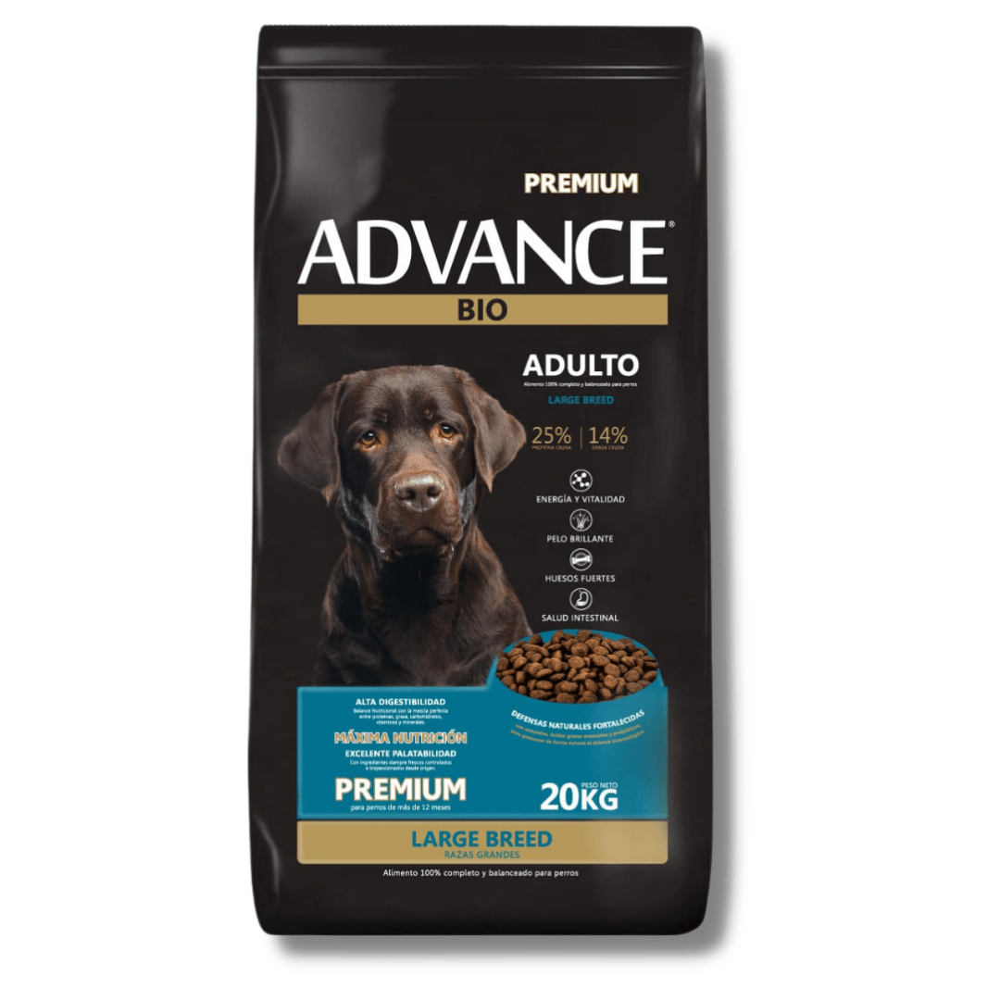

Alimento para perros adultos / 20Kg
Alimento para gatos en cualquier etapa / 10Kg

Alimento principal especialmente recomendado para peces del tipo Goldfish, telescopicos, ornadas, escama de perlas, carassius, y pequeños / 200 g

Alimento para aves mix silvestre / 750g
Para perro / De goma /63Mm

Para gatos/perros / Tamaño:Medio

| Dia | Lunes | Martes | Miercoles | Jueves | Viernes | Sabado |
|---|---|---|---|---|---|---|
| Horario | 9:00-12:00 y 16:00-19:00 | 9:00-12:00 y 16:00-19:00 | 9:00-12:00 y 16:00-19:00 | 9:00-12:00 y 16:00-19:00 | 9:00-12:00 y 16:00-19:00 | 16:00-19:00 |
| Paseador | Ana Martinez | Miguel Ruiz | Miguel Ruiz | Maria Gomez | Pedro Sanchez | Ana Martinez |
Dirección: Av. Francisco Beiró 5645, Villa Devoto
Teléfono: 555-5678
Horario de atencion: Lunes-Viernes 8AM-12AM y 5PM-9PM
Dirección: Av. Libertador 2629, Olivos
Teléfono:565-5468
Horario de atencion: Lunes-Viernes 8AM-12AM y 6PM-9PM
Dirección: Av. Del Libertador 13125, Martínez
Teléfono: 553-3894
Horario de atencion: Lunes-Viernes 9AM-12AM y 6PM-8PM
Dirección: Calle 56 nro. 539, La Plata
Teléfono: 555-5538
Horario de atencion: Lunes-Viernes 8AM-12AM y 5PM-8PM